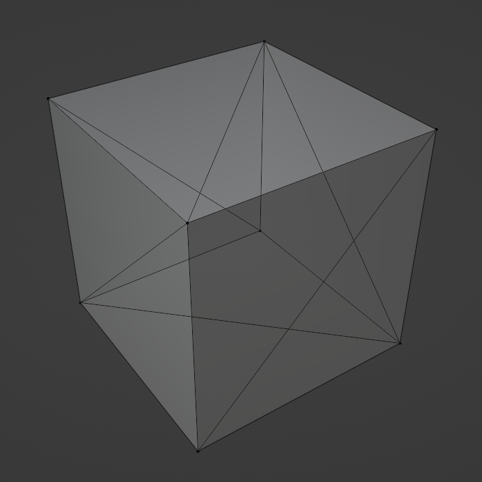
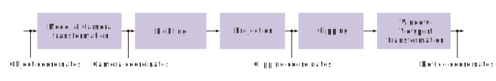
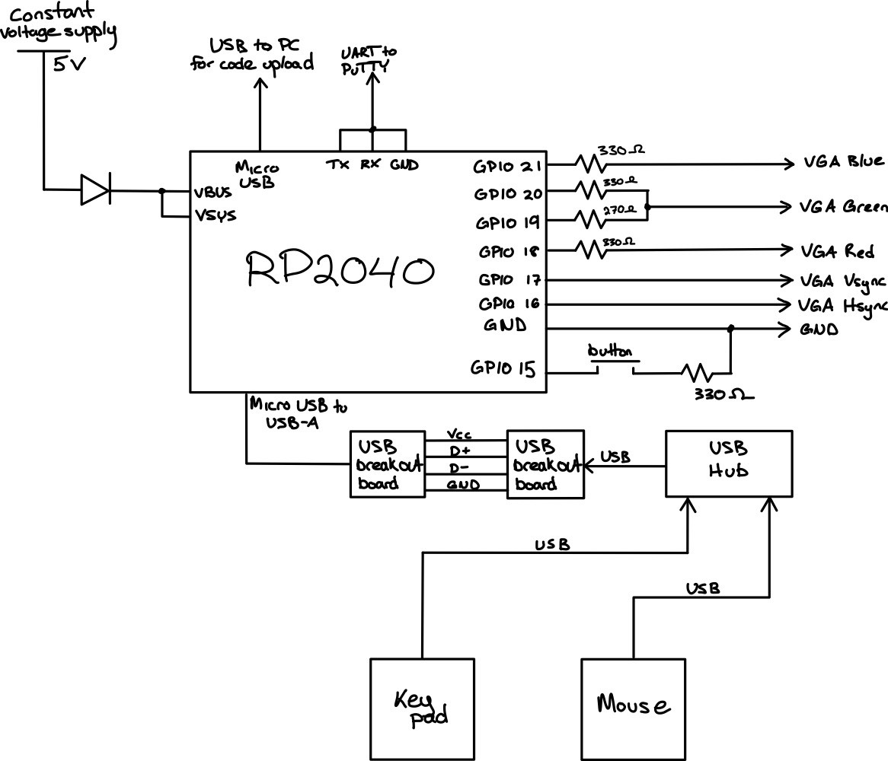
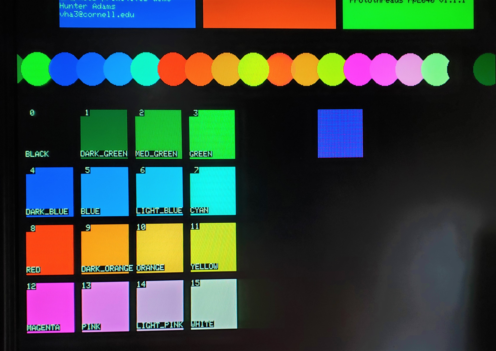
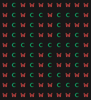
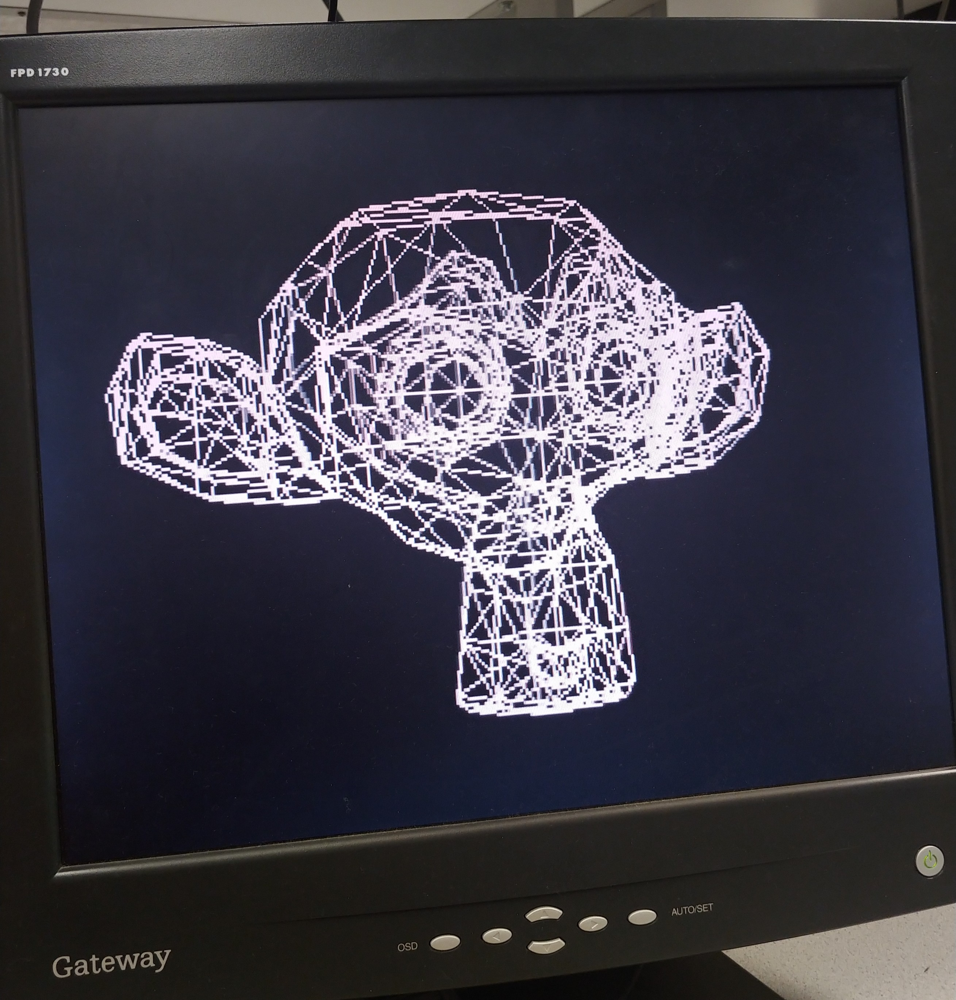
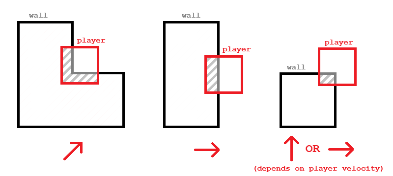

Introduction
Our final project is a 3D-rendered video game in which the player navigates a procedurally generated maze using a USB mouse and keypad, running entirely on the Raspberry Pi Pico.
We implemented a full 3D graphics pipeline, which reads 3D models from input OBJ files and renders onto a VGA screen. We created a script to procedurally generate a 3D maze model, and implemented a user interface using USB, to allow the player to move around inside a 3D maze in a first-person view.
High level design
We chose to do this project because we thought it would pose an interesting challenge, and give us the opportunity to learn more about 3D rendering. No previous project for this class used a true 3D rendering engine to create an interactive experience. The closest was “Maze in a Box” [1], which used a Doom-style pseudo-3D system. We thought we could improve upon this, since the Pico has much more RAM and computational power than the ATMega32.
Background math
1. 3D models
A 3D shape is represented as a set of triangles which collectively form the surface of that shape. For example, a cube is made of 12 triangles, since each of its 6 square faces can be broken down into 2 triangles. A sphere or other curved shape can be approximated by many small triangles.

Because triangles in a model usually share vertices with other triangles, models in the OBJ format are represented using a list of vertices and a list of triangles. The vertex list stores the 3D coordinates of each vertex, and the triangle list defines the set of vertices in each triangle as a set of indices in the vertex list. This means every vertex only has to be defined once, which saves us time when we have to transform every vertex in a model.
2. Linear algebra
To move a model by 1 unit in the x direction, we can add 1 to the x coordinate of each of its vertices. To rotate a model, we can rotate each of its vertices the same amount. In general, any combination of translation, rotation, and scaling is called an “affine transformation”, and to apply any affine transformation to a model, we just apply it to every vertex. This is done by augmenting each 3D vertex into a 4D vector (x, y, z, 1), and multiplying it by a 4x4 matrix.
Most of the steps in the 3D graphics pipeline are affine transformations from one coordinate space to another. For example, to transform an object from the “world coordinate space” to the “camera coordinate space”, we rotate and translate every vertex by the camera angle and position. This moves the origin of the coordinate system from the lower-left corner of the maze to the center of the camera.

(Public domain diagram courtesy of Wikipedia)
3. Fixed-point math
We used fixed-point math instead of floating-point math for most of the project, which was described in lecture and used in previous labs. This was necessary as a performance optimization to make the game playable.
Software architecture
The animation thread, which executes the entire graphics pipeline, runs on core 1, while the TinyUSB host task runs on core 0. All of our linear algebra is implemented in “threeD.h” and “threeD.c”, and our fixed-point macros are in “fix15.h”. These functions are used in the main file, “maze.c”, to implement the graphics pipeline. At the end of the pipeline we use the 2D graphics primitives implemented in “vga_graphics.c” to rasterize the geometry and display it on the screen. This file is based on the VGA graphics library provided by Hunter Adams, with heavy modifications to allow double-buffering, reduce the resolution, increase the color depth, enable z-buffering, and improve performance.
Hardware diagram

Hardware/software tradeoffs
A handful of design decisions had to be made during the process of proposing and developing this project. For example, in deciding the user interface, we could have used a simpler communication protocol, but choosing USB allowed us to use a mouse and keypad, which already feels natural to most users. However, because the TinyUSB implementation for the Pico is very resource-intensive, we were unable to run a serial thread on the same core as the USB task. Doing this would cause the serial monitor to print very slowly, and to not register most user inputs. Due to this, we decided to remove the serial thread after adding USB support, since it was only used for debugging.
Additionally, using USB required us to purchase two USB-A breakout boards so they could interface with the Pico.
Other decisions, such as the resolution of the VGA display, were limited by the constraint that our system has only 264 kB of memory available. The original 640x480 resolution required 153.6 kB of memory to store a single frame, which was too large to allow for double-buffering, since two frames would exceed the Pico’s memory capacity. Reducing the resolution to 320x240 allowed us to use double-buffering and improve the quality of the displayed image, but also cost us a lot of development time.
Another trade-off was color depth. Modern displays use 24 bits per pixel, but we could only use 4 bits per pixel to fit within the Pico’s memory constraints. This was slightly more complicated than our original 3-bit RGB implementation, but we decided the additional complexity was worth it in exchange for more colors available. We wanted the maze to have an illusion of depth, and 3 bit RGB color would not provide enough color resolution to create a convincing effect. One option would be to use grayscale, which would give us 8 shades of gray using 3-bit color, or 16 shades if we upgraded to 4-bit color. Because 4 bit color would use the same amount of memory as 3-bit (2 pixels per byte either way), we chose 4-bit color. We chose to add a second green bit, to give us nice-looking color pallete with enough resolution for convincing shading [2].

(Image courtesy of Hunter Adams’ and Bruce Land’s 16-color VGA demo page)
Program and Hardware Design
Maze generation
Prim’s algorithm is an algorithm that can generate a random maze of any size [3]. This algorithm is specific in that the entrance and exit of the maze are opposite of each other, and that there are only two continuous walls in the maze with no closed off loops. We implemented Prim’s algorithm in Python, and produced two outputs. First, we output an OBJ file so that our 3D renderer could display the maze in 3D space. Second, we output an array of binary values representing which grid cells contained walls, for later use in calculating player collisions with walls.

3D pipeline
Our graphics pipeline is based on vector math we implemented in “threeD.h” and “threeD.c”. We defined 2D, 3D, and 4D vectors, as well as 3x3 and 4x4 matrices, as custom struct data types. We then defined functions to add vectors, multiply matrices, and multiply a matrix and a vector using these structs. We also create a helper function to initialize a rotation matrix based on the Euler angles of the rotation, and a helper function to initialize a 4D affine transformation matrix to represent both a rotation and a translation.
Because the Pico doesn’t have a file system, the 3D models rendered by our graphics pipeline are defined inside of C header files and are baked into the program at compile time, instead of being loaded at runtime. To make sure our pipeline worked for a variety of input models, we wrote a Python script to convert any OBJ file into a header file. This lets us create an arbitrary model in Blender, export it as an OBJ file, convert it into a header file automatically, and render it on the Pico after compiling the code.
To render a model, we transform its vertices from “model space” into “world space” based on that object’s position, rotation, and scale. The vertices are then transformed into the “camera space” based on the camera’s position and rotation, which represents the player’s point of view. Then, the vertices are projected into a 4D “clip space” using another transformation, after which we clip away any geometry that is off-screen and invisible to the player. This clipped geometry is then transformed back to 3D space, and projected onto a 2D plane (“screen space”) to be drawn onto the 2D screen.
Here is an example of a stock Blender model (“Suzanne”) rendered by our system as a wireframe:

Initially, we rendered models as wireframes, to make sure that the corners and edges of each face were transformed into screen coordinates correctly. This just used drawLine() to connect the three corners of each triangle using the coordinates we got at the end of the pipeline. Eventually, we replaced this with filled-in triangles, so that the player couldn’t see through the walls of the maze, and to enhance the illusion of depth.
The final stages in the pipeline are clipping and rasterization. Clipping removes any parts of the world geometry which are outside the camera’s field of view so that they aren’t displayed on the screen. Rasterization converts the transformed vertex and triangle data into pixels on the screen. This is done using a z-buffer, which stores the distance from the camera to the nearest object at every screen pixel, so that nearer triangles are drawn in front of more distant triangles.
To improve the illusion of depth, we also use the z-buffer to determine the color of each pixel, so that the walls of the maze become darker the further away they are.
After rendering all of the 3D elements of the game, we draw the remaining UI elements, including the FPS (frames per second) in the upper-left corner.
VGA display driver
In the original single-buffer VGA implementation, the DMA channels read pixel data from the same array that drawPixel() writes data to. This means that if a draw function is called while a frame is being displayed on the VGA screen, the screen can display an incomplete frame. This creates a very noticeable flickering effect when the framerate is below 60 FPS which ruins the game experience.
To fix this, we implemented double buffering. Draw functions write to one frame buffer, and the DMA channels read from a separate frame buffer. Once a frame is done being drawn, the buffers are swapped. This way, the DMA channels only ever read from a completed frame, and the next frame is calculated while the last frame is being displayed. This eliminates the flickering effect at the cost of doubling the amount of visual memory required.
To meet memory constraints, we had to reduce the resolution to 320x240, taking up a quarter of the space. To do this, we had to modify the PIO and C files used by the VGA driver code we were given in class. We achieved this by following past work which did something similar [4].
In summary, to stretch a 320x240 frame onto a 640x480 screen, we adjusted the timing of the rgb.pio state machine to draw each pixel for twice as long, and we duplicated the rgb.pio state machine and both DMA channels to draw each row of pixels twice. This allowed for one pixel to be displayed as a 2x2 group of pixels on the screen.
To implement 4-bit color, we made similar changes as seen in the 16-color VGA implementation mentioned above. This also required us to add additional resistors to combine the two green bits into one analog output.
USB and user interface
To use the Pico as a USB host, we followed the example code in the pico-examples repository [6] which uses TinyUSB. This implementation of USB uses the Pico’s micro-USB input as a bus which we can connect peripheral devices to, and gives us an easy way to interface with mouse and keyboard-type devices.
For the hardware, we plugged a mouse and keypad into a USB-A hub, which allowed us to use both at the same time. We connected the hub to the Pico through a USB-A to micro-USB cable and two USB-A breakout boards.
Since using USB this way monopolizes the Pico’s micro-USB input port, we needed to power the Pico externally, which we did by following the RP2040 datasheet [5]. We connected a 5V power supply to the VBUS and VSYS pins. This was connected through a diode to ensure the proper power flow direction and prevent damage to the power supply.
Player movement and collisions
The player interacts with the game by moving the mouse to rotate the camera and look around, and by pressing the arrow keys on the keypad to move the player character through the world. We implemented this by adding code to the USB event handlers which set global variables based on which inputs were pressed / how the mouse moved, to communicate to the main game thread how the player position and orientation should be updated. Keypad inputs were used to set the player’s velocity, which was added on to their position on every frame. Mouse inputs were added directly to the player’s rotation angles, so that the speed with which the camera moves correlates to the speed with which the mouse moves.
To prevent the player from walking through walls, we implemented basic collision detection and resolution. After the player’s position is updated by their velocity, if any of the 4 corners of their hitbox are inside of a wall of the maze, the player is pushed slightly so that they’re just touching the wall, instead of overlapping with it. Because the walls of the maze were aligned with the x/z coordinate grid, we’re able to detect if a given position is inside a wall by looking up the value stored in a 2D array of booleans, which stores whether a grid cell is a wall or a corridor. This array is generated in the maze generation step along with the 3D maze model.
This diagram briefly illustrates the different collision resolution cases, and which direction the player is pushed based on how their hitbox overlaps with a wall: 
Results
Our final demo satisfies the goals laid out in our proposal. The course instructor was able to freely navigate the maze using the mouse and keypad with no outside assistance, and the VGA screen displayed our desired outcome properly. The resulting image crates a convincing 3D effect with a sense of depth, and there are very few noticeable visual bugs. The mouse and keypad felt smooth and easy to use, and the wall collisions were implemented correctly.
The project demo ran at around 20-30 FPS, which was sufficient in creating a smooth playing experience. This was possible thanks to optimizations discussed earlier, such as the dual-frame buffer and fixed-point math.
We tested the system informally throughout development by noting the FPS and navigating the maze to find bugs visually. We would note the FPS before and after making a change to the code to measure if it had an effect on performance.
The safety of the project is ensured by the current limiter on our power supply, and the highest voltage that we worked with was 5V which is reasonably safe. No mechanical parts posed a possibility of harm, except for the somewhat pointy metal pins on the USB breakout boards. The safety of the electronics was guaranteed by a diode connected between the power supply and the Pico so that power wouldn’t flow the wrong way and damage anything delicate.
While the project met our goals, some improvements could be made. Some boundary lines between the walls and the floor/ceiling can appear blurry, likely because our z-buffer has only 8 bits per pixel. The FPS could also be improved by further optimizing the culling and rasterization steps.
Conclusion
This final project concludes our semester in ECE 5730 at Cornell University. Our project had simple hardware, consisting only of a mouse and keypad, a USB hub and breakout boards, and a few resistors and wires. Most of the time was spent on software development to be able to display what was desired on the VGA screen.
This project enabled us to explore many topics through the lens of implementing a complicated system on our microcontroller. We had to research 3D rendering, clipping, and shading extensively to be able to do the project. We explored using the Pico as a host to USB peripherals instead of as a device. We had our first experience modifying the Pico’s DMA channels and PIO machines in order to have low enough display resolution to save on memory. We also were required to bring prior knowledge such as optimization techniques to make sure the game would run smoothly, and organized our code architecture accordingly.
The system was evaluated on how accurately it portrayed what we wanted the user to see. Fixing errors was done simply by observing if any visual bug had been fixed. The project could have had a formalized troubleshooting procedure including recording the FPS and documenting any observed bugs, but we took a more casual approach. If we were to continue the project, formal documentation of testing would be useful.
Appendices
Appendix A: Permissions
The group approves this report for inclusion on the course website.
The group approves the video for inclusion on the course YouTube channel.
Appendix B: Sources
[1] J. Kauffman and Y. Yeo, “Cornell University ECE 4760 Final Project: Maze in a Box,” ECE4760 Final Projects, https://people.ece.cornell.edu/land/courses/ece4760/FinalProjects/s2008/jvk7_yy244/jvk7_yy244/index.htm (accessed Dec. 13, 2023).
[2] B. Land, “ProtoThreads with 640x480 VGA 16-color,” Cornell University ECE4760 Projects, https://people.ece.cornell.edu/land/courses/ece4760/RP2040/C_SDK_vga16_protothreads/index_vga_Protothreads.html (accessed Dec. 13, 2023).
[3] O. Zekai, “Fun with Python #1: Maze Generator,” Medium, https://medium.com/swlh/fun-with-python-1-maze-generator-931639b4fb7e (accessed Dec. 13, 2023).
[4] B. Land, “319x240 VGA 256-color Pi Pico RP2040,” Cornell University ECE4760 Projects, https://people.ece.cornell.edu/land/courses/ece4760/RP2040/C_SDK_vga256/index_vga_256.html (accessed Dec. 13, 2023).
[5] Raspberry Pi, “Hardware Design with RP2040,” Raspberry Pi Documentation, https://datasheets.raspberrypi.com/rp2040/hardware-design-with-rp2040.pdf (accessed Dec. 14, 2023).
[6] “Raspberry Pi Pico Examples,” GitHub, https://github.com/raspberrypi/pico-examples/tree/master/usb/host/host_cdc_msc_hid (accessed Dec. 13, 2023).
Appendix C: Task Breakdown
Most of the work was accomplished by both group members working together in-person. Tasks which were done individually included:
Alix:
- Maze generation script
Demian:
- Z-buffer implementation